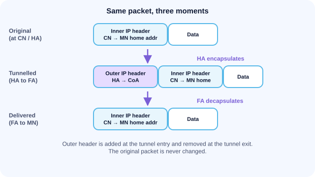
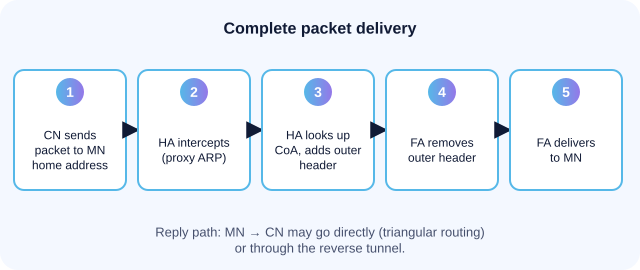

Mobile IP Architecture
How CN, HA, FA and MN connect across the Internet.
Mobile IP lets a moving device keep one permanent address. A Home Agent and a Foreign Agent redirect packets through a tunnel, so communication continues wherever the device goes.
The Internet was originally designed for fixed hosts: an IP address indicates both a device's identity and its topological point of attachment to a network. When a device moves to a new network, its IP address must either change (breaking active TCP sessions and sockets) or packets continue routing to the original network. Mobile IP (RFC 5944) resolves this fundamental limitation by separating identity (the device's permanent Home Address) from location (the temporary Care-of Address) and tunneling packets between the two. This ensures seamless, transparent connectivity across heterogeneous networks without requiring any modifications to higher-layer protocols or correspondent nodes.
How CN, HA, FA and MN connect across the Internet.

The two mobility agents and their core responsibilities.

Outer IP header added by HA and stripped by FA.

The complete path of a packet from CN to MN.
Mobile IP (RFC 5944 for IPv4) is an Internet standard protocol that enables a device to retain its permanent home address while attached to different networks and subnets. Applications and transport connections continue using this single address, so TCP sessions, socket states, and open streams survive a network handoff without interruption.
The Mobile Node (MN) is a host or router that changes its point of attachment from one network or subnetwork to another without changing its IP address. Examples include smartphones, laptops, and vehicular communications units. The MN has a permanent Home Address assigned by its home network and discovers mobility agents to acquire a Care-of Address when moving to foreign subnets.
The Correspondent Node (CN) is the peer host communicating with the Mobile Node, such as a web server, streaming service, or another computer. The CN is completely unaware of the Mobile Node's movement; it sends regular IP packets addressed to the MN's permanent Home Address, trusting standard routing and the Mobile IP infrastructure to deliver them.

The Home Agent (HA) is a specialized router on the Mobile Node's home network. It maintains a mobility binding directory associating the MN's Home Address with its current Care-of Address. While the MN is away, the HA intercepts packets addressed to the MN using proxy ARP, encapsulates each packet inside a new outer IP datagram, and forwards it through a tunnel to the Care-of Address.
The Foreign Agent (FA) is a router on the visited network providing routing services to registered Mobile Nodes. It periodically advertises its presence via Agent Advertisements, relays the MN's registration messages to and from the Home Agent, decapsulates tunneled packets forwarded by the HA, and delivers the unencapsulated inner datagrams to the Mobile Node across the local physical link.
The Care-of Address (CoA) is a temporary IP address that reflects the Mobile Node's current topological location on a visited network, serving as the tunnel exit point. A Foreign Agent CoA is the IP address of an FA on that network, shared by multiple MNs. A co-located CoA is a unique address acquired directly by the MN (e.g., via DHCP), where the MN itself decapsulates packets.

Encapsulation is the process where the Home Agent wraps the entire original IP packet inside a new outer IP datagram. The outer header specifies the HA as the source address and the Care-of Address as the destination address. Setting IP protocol number 4 (IP-in-IP, RFC 2003) informs intermediate routers to forward the packet based strictly on the outer header without altering the inner datagram.
Decapsulation is performed at the tunnel endpoint (the Foreign Agent or the Mobile Node itself when using a co-located CoA). The outer IP header is stripped off, uncovering the original packet with its initial CN source address and MN Home Address destination. The recovered packet is delivered to the Mobile Node's operating system stack completely intact.

Forward Tunneling is the path taken by packets sent from the Correspondent Node to the Mobile Node. Standard IP routing brings packets to the MN's home network, where the Home Agent intercepts them. The HA encapsulates the packets and forwards them through the tunnel across the Internet to the Care-of Address (Foreign Agent), which delivers them to the Mobile Node.

Reverse Tunneling (RFC 3024) carries packets sent by the Mobile Node back through the Foreign Agent and Home Agent to the Correspondent Node. Although an MN could theoretically send packets directly to the CN, visited network routers with ingress filtering often drop outbound packets whose source address does not belong to the local subnet. Reverse tunneling overcomes this by channeling traffic back to the HA first.


Mobile IPv4 (RFC 5944) is an Internet protocol that lets a device keep its permanent Home Address while moving between IP networks. The Mobile Node registers its current Care-of Address (CoA) with its Home Agent (HA). The HA forwards packets sent to the Home Address through a tunnel to the current CoA, ensuring seamless connectivity.
Normal IP addresses identify both a host and its point of attachment. When a device moves, its old address becomes unreachable through normal routing, breaking existing sessions. Mobile IPv4 maintains reachability by keeping the Home Address unchanged and updating only the Care-of Address, so communication continues without interruption.
The main entities are: Mobile Node (MN) — the mobile device; Home Agent (HA) — a router on the home network maintaining the MN mobility binding; Foreign Agent (FA) — a router on the visited network providing a CoA; Correspondent Node (CN) — the host communicating with the MN. The CN sends packets to the Home Address; the HA intercepts and tunnels them to the FA; the FA delivers them to the MN.
Mobile Node (MN): moves between networks, discovers mobility agents, and requests registration. Home Agent (HA): stores the Home Address-to-CoA binding, intercepts packets for the MN, and tunnels them to the CoA. Foreign Agent (FA): advertises mobility services, provides an FA CoA, relays registration messages, and delivers decapsulated packets to the MN. Correspondent Node (CN): communicates with the MN using its Home Address without needing to know the MN has moved.
The Home Address (HoA) is the permanent IP address assigned to the MN on its home network. It remains unchanged when the MN moves and is used by the CN to reach the MN. The Care-of Address (CoA) identifies the MN current point of attachment on a visited network. The HA uses the CoA as the tunnel destination to route packets to the MN current location.
Agent Discovery allows an MN to detect whether it is on its home network or a foreign network, and to identify available mobility agents. Mobility agents periodically send Agent Advertisements (ICMP Router Advertisements with Mobile IPv4 extensions) that announce their role and available Care-of Addresses. If no advertisement is received in time, the MN can send an Agent Solicitation to request one immediately.
An Agent Advertisement is an ICMP Router Advertisement containing a Mobile IPv4 Mobility Agent Advertisement extension. It announces the agent mobility role (HA, FA or both) and may include one or more CoAs and registration lifetime information. An Agent Solicitation is an ICMP message sent by an MN when it needs to find an agent quickly. It prompts agents on the local link to send an advertisement sooner than their next scheduled interval.
The MN discovers an FA or obtains a co-located CoA. It then sends a Registration Request containing its Home Address, HA address, CoA, requested lifetime, and authentication. If using an FA, the FA relays the request to the HA. The HA authenticates the request and creates or updates the mobility binding. The HA replies with a Registration Reply (accepted or rejected), which the FA relays back. The request path is MN → FA → HA; the reply path is HA → FA → MN.
A Registration Request is sent by the MN to ask the HA to register or renew its current location. It includes flags, the requested lifetime, Home Address, HA address, CoA and an identification value for replay protection. A Registration Reply reports whether the request was accepted or rejected. It includes a result code (0 = accepted, non-zero = rejected with reason), the granted lifetime, and a matching identification value.
The CN sends an IP packet to the MN permanent Home Address. The HA intercepts the packet on the home network using proxy ARP. The HA encapsulates the original packet in a new IP packet addressed to the CoA (IP-in-IP). The tunnel carries the encapsulated packet to the FA or co-located CoA. At the tunnel endpoint, the outer header is removed and the original packet is delivered to the MN.
Tunneling in Mobile IPv4 is the process of carrying an original IP packet inside another IP packet. The HA is the tunnel entry point and the CoA is the tunnel endpoint. The outer IP header carries the packet to the MN current location, while the inner packet retains the original CN source address and MN Home Address. This technique is called IP-in-IP encapsulation (RFC 2003).
Encapsulation is performed at the HA by wrapping the original IP packet in a new outer IP header. The outer header sets the HA address as source and the CoA as destination. The original packet (inner packet) remains unchanged. Decapsulation is performed at the tunnel endpoint (the FA or MN): the outer header is removed, exposing the original packet, which is then delivered to the MN.
IP-in-IP is a tunneling method where an entire original IP packet is placed inside a new IP packet. The outer header has the HA address as source and the CoA as destination. The inner header retains the original CN source address and MN Home Address as destination. Protocol number 4 in the outer IP header identifies it as IP-in-IP. Tunnel routers forward using the outer header; the inner packet is recovered only after decapsulation at the endpoint.
Reverse tunneling (RFC 3024) carries packets sent by the MN through a tunnel back to the HA. The MN outgoing packet is sent to the FA, which tunnels it to the HA. The HA decapsulates it and forwards it toward the CN. Reverse tunneling is used when visited-network ingress filtering would otherwise drop packets whose source address is the MN Home Address, since those addresses are not topologically correct on the visited network.
A Foreign Agent CoA is an address advertised by a Foreign Agent in the visited network. The FA is the tunnel endpoint and delivers the decapsulated packet to the MN. This requires no address acquisition by the MN. A co-located CoA is an address obtained directly by the MN on the visited network (via DHCP or similar). With a co-located CoA, the MN itself is the tunnel endpoint and performs decapsulation, so no FA is needed.
A mobility binding is an entry maintained by the HA for each registered MN. It associates the MN Home Address with its current CoA, along with a registration lifetime and related state. The HA uses the binding to determine the tunnel destination when forwarding packets to the MN. The binding is created on the first successful registration and is refreshed or replaced whenever the MN re-registers with an updated CoA or renewed lifetime.
The MN detects movement by receiving Agent Advertisements from a new FA. It obtains a new CoA on the new visited network. The MN sends a new Registration Request to its HA (via the new FA). The HA updates its mobility binding with the new CoA. Subsequently, all packets destined for the MN Home Address are tunneled to the new CoA. Packets in transit to the old CoA may be lost until the binding update completes.
Triangle routing occurs because the CN always sends packets to the MN Home Address, so traffic must first reach the home network. The HA intercepts and tunnels the packet to the MN CoA, creating a triangular forwarding path: CN → HA → FA → MN. The MN may reply directly to the CN, so return paths can be shorter. This triangle can cause longer end-to-end paths and additional delay compared with route-optimized communication.
Registration security is critical because a false update could redirect the MN traffic to an attacker. Mobile IPv4 uses authentication extensions, especially the Mobile-Home Authentication Extension, which is a mandatory HMAC-based message authentication code. The HA verifies the authentication before accepting any registration update. Security associations and shared keys are configured between MN and HA (and optionally FA). Replay protection using a timestamp or nonce in the identification field prevents reuse of old registration messages.
Advantages: The MN retains its permanent Home Address while moving between IPv4 networks. Communication can continue without requiring the correspondent node to track the MN every movement. Mobility support is provided at the network layer, transparent to applications. Limitations: Encapsulation adds 20 bytes of outer-header overhead per packet. Triangle routing can increase path length and delay. Agent discovery and registration introduce signaling overhead. Secure deployment requires careful management of keys and security associations.